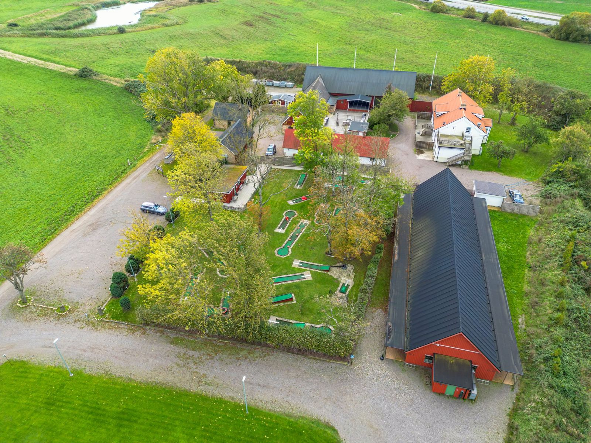

Se dig omkring
Gå rundt på gården
Kig ind i værelserne og festlokalet i 360°, eller flyv over jorden.

Indkørslen Her kører du ind og parkerer. Parkering er gratis for gæster.
Træk i billedet for at se dig omkring. Klik på skiltene for at gå videre.


Fra oven
Flyv over Gammeleksgården
Et minut over gården, markerne og E6, med Øresund i baggrunden.
Fra luften
Gården midt i det åbne landskab

